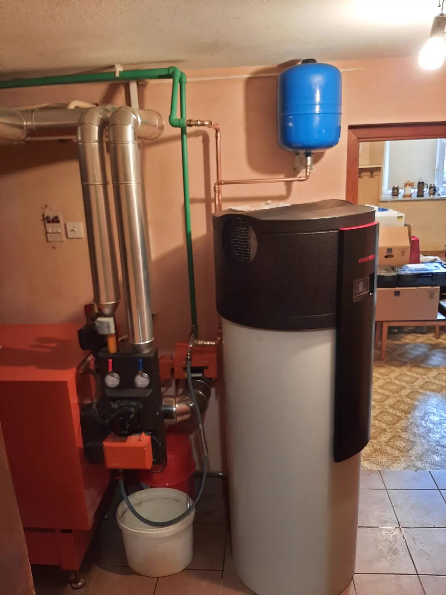

Strojne inštalacije · Kranj · od 2014
Inštalater strojnih inštalacij v Kranju.
Vodovod, centralno ogrevanje, toplotne črpalke in talno gretje. Nejc Košnik z ekipo uredi vse od menjave pipe do celotne kotlovnice – v hišah, stanovanjih in novogradnjah po Gorenjskem.
- 4,5 Google · 10 mnenj
- 9,8/10Mojmojster · 25 ocen
- 12 letizkušenj · od 2014

01Storitve
Strojne inštalacije v Kranju in okolici
Vodovod, ogrevanje in sanitarna oprema iz ene roke. Kot vodovodar in inštalater delamo v hišah, stanovanjih in novogradnjah – od manjšega popravila do celotnega sistema.
-
01
Vodovodne inštalacije
Nova napeljava v novogradnji ali prenovi in vsa manjša vodovodna popravila.
Vodovodar Kranj -
02
Centralno ogrevanje
Kotlovnice, priklop kurilnih naprav ter menjava radiatorjev in ventilov – tudi z zamrzovanjem cevi.
Ogrevanje -
03
Toplotne črpalke
Toplotne črpalke za sanitarno vodo in ogrevanje – dobava, priklop in zagon.
Toplotne črpalke -
04
Talno ogrevanje
Vodno talno, stensko in stropno gretje v novogradnjah in prenovah.
Talno gretje -
05
Prenova kopalnic
Adaptacija kopalnice od nove napeljave do montaže tuš kabine in sanitarne opreme.
Kopalnice -
06
Plin in kotli
Plinske napeljave, plinski kotli ter kotli na pelete, drva in kurilno olje.
Kotli in plin
02Menjava radiatorjev
Radiator zamenjamo brez praznjenja sistema
Z napravo za zamrzovanje cevi naredimo na cevi ledeni čep. Vode iz sistema ni treba izpustiti, zato je menjava radiatorja ali ventila hitrejša – v bloku pa sosedom ni treba ostati brez ogrevanja.
- 1
Zamrznemo
Na dovod in povratek namestimo zamrzovalni objemki. Voda v cevi zamrzne v trden čep.
- 2
Zamenjamo
Radiator ali ventil zamenjamo, medtem ko preostanek sistema ostane poln.
- 3
Odtalimo
Ledeni čep se stali, sistem odzračimo in ogrevanje spet deluje.
03O nas
Inštalacije iz Kranja, od leta 2014
Za imenom stoji Nejc Košnik, inštalater strojnih inštalacij s sedežem na Jezerski cesti v Kranju. Samostojno dejavnost je odprl oktobra 2014, danes pa z ekipo ureja vodovod, ogrevanje in kopalnice po vsej Gorenjski.
Delamo od menjave pipe ali bojlerja do nove kotlovnice, toplotne črpalke in talnega gretja. Preden karkoli zamenjamo, pogledamo celoten sistem – zato stranke v mnenjih pogosto omenijo tudi dober nasvet.
- A
Odzivnost
Pokličete in se dogovorimo za termin. Hitro odzivnost omeni skoraj vsako mnenje o nas.
- B
Celoten sistem
Ne zamenjamo le dela, ki ne deluje. Preverimo, zakaj ne deluje, in predlagamo rešitev, ki zdrži.
- C
Čisto delo
Po koncu sistem preizkusimo in zaženemo, za sabo pa pospravimo.
04Postopek
Od klica do delujočega sistema
Štirje koraki, brez presenečenj. Vsako delo se začne s pogovorom in konča z zagonom sistema.
- 01
Pokličete ali pišete
Opišete težavo ali načrt – po telefonu 031 444 466 ali prek obrazca. Fotografija pogosto pove največ.
- 02
Ogled in nasvet
Pridemo pogledat, izmerimo in predlagamo rešitev, ki ustreza vašemu sistemu in proračunu.
- 03
Ponudba
Pred začetkom dobite ponudbo z materialom in delom, da veste, kaj naročate.
- 04
Izvedba in zagon
Montiramo, preizkusimo tesnost, zaženemo sistem in za sabo pospravimo.
05Galerija
Iz naših del
Fotografije so iz resničnih projektov: kotlovnica s toplotno črpalko, prenovljena kopalnica, plinski kotel in talno gretje v novogradnji.
06Mnenja strank
„Vrhunska storitev za dobro ceno.“
Mnenje z Googla. Spodaj še nekaj drugih – z Googla, Mojmojstra in Primerjam.si, prepisanih brez popravkov.
-
Zelo odziven, zanesljiv vodovodar, uredil nam je tudi ogrevanje, toplo priporočam!
Jure HumarGoogle · pred 3 leti
Odgovor lastnika
„Hvala Jure! … hvala za zaupanje in naj ti bo toplo.“
-
Mojster se je odzval isti dan, ko sem ga poklical in še isti dan izvedel popravilo, korektno in hitro.
Milan J.Primerjam.si
-
Hitra odzivnost strokovno narejeno in še kakšen pameten nasvet dobiš. Le tako naprej.
IgorGoogle · pred 5 leti
-
Korekten odnos in hitro opravljeno delo.
Tone K.Mojmojster · pregled, menjava bojlerja pri centralni
-
Svetovanje glede menjave peči in celotnega ogrevanja.
Savs M.Mojmojster · popravilo plinske peči
-
Kvaliteto, odzivnost, prijaznost.
Brigita P.Primerjam.si
07Vprašanja
Pogosta vprašanja
Ne najdete odgovora? Pokličite 031 444 466 – hitreje je kot pisati.
Ali lahko zamenjate radiator brez praznjenja celotnega sistema?
Da. Radiatorje in ventile menjamo tudi s sistemom zamrzovanja cevi: na cevi naredimo ledeni čep, zato celotnega sistema ni treba izprazniti. To je posebej praktično v blokih, kjer bi sicer morali izprazniti celoten dvižni vod.
Kje opravljate storitve?
Sedež imamo na Jezerski cesti 78b v Kranju. Delamo v Kranju z okolico – Šenčur, Naklo, Cerklje, Preddvor, Tržič, Škofja Loka – in po Gorenjskem.
Ali montirate toplotne črpalke za sanitarno vodo?
Da. Toplotno črpalko za sanitarno vodo dobavimo, priklopimo na vodovod in po potrebi na obstoječo kotlovnico ter jo zaženemo. Več na strani Toplotne črpalke.
Ali lahko dobim subvencijo Eko sklada?
Za toplotne črpalke in prenovo ogrevanja Eko sklad občanom pogosto ponuja nepovratne spodbude. Pogoji se spreminjajo, zato jih pred nakupom naprave preverite na ekosklad.si. Povemo vam, katero napravo predlagamo in kaj potrebujete od nas.
Koliko stane menjava bojlerja ali radiatorja?
Cena je odvisna od naprave, dostopa in obstoječe napeljave. Po kratkem opisu ali ogledu pripravimo ponudbo z materialom in delom – preden začnemo.
Kako hitro lahko pridete?
Pokličite 031 444 466 in termin uskladimo glede na nujnost. Pri puščanju vode najprej zaprite glavni ventil, nato nas pokličite.
Ali izdate račun?
Da. Smo zavezanec za DDV (ID za DDV SI97464937), za vsako delo izdamo račun.
08Kontakt
Pokličite ali pošljite povpraševanje
Najhitreje nas dobite po telefonu. Če pišete, dodajte kraj in kratek opis – fotografijo okvare ali prostora lahko priložite v Gmailu, ki se odpre.
031 444 466- E-poštainstalacijekosnik@gmail.com
- NaslovJezerska cesta 78b, 4000 KranjNavodila za pot
- Delovni časDelavniki od 7.00Termin po dogovoru
- PodjetjeInštalacije centralnih in vodovodnih naprav, Nejc Košnik s.p.Matična št. 6698107000 · ID za DDV SI97464937
Jezerska cesta 78b, KranjZemljevid Google se naloži šele, ko ga odprete, saj Google pri tem nastavi svoje piškotke.